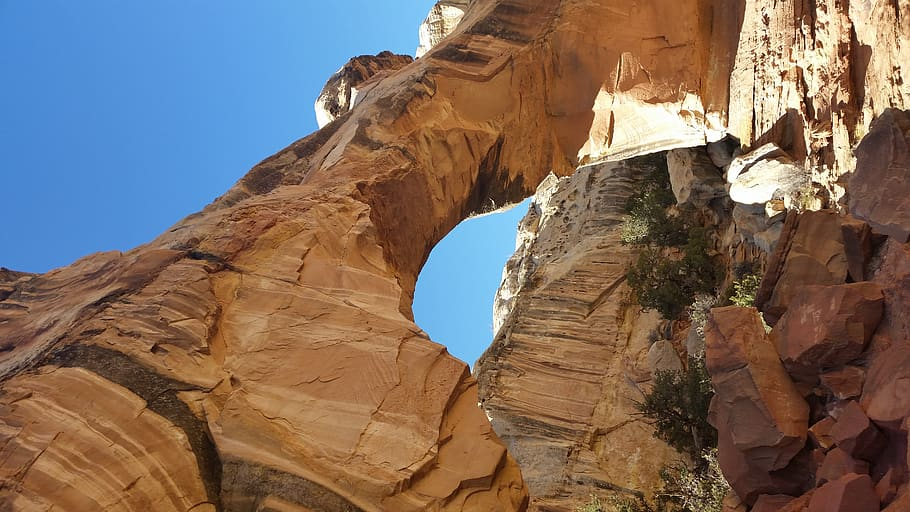
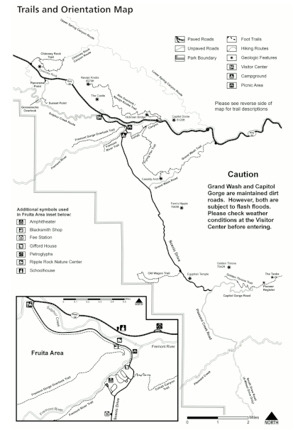

|  | Capitol Reef National ParkBy Leia ReclusadoLocated in south-central Utah in the heart of red rock country, Capitol Reef National Park is a hidden treasure filled with cliffs, canyons, domes, and bridges in the Waterpocket Fold, a geologic monocline (a wrinkle on the earth) extending almost 100 miles. |
The park is open all year (24 hours a day)
The visitor center, located just off UT-24, has information, maps, books, displays, and a slide program. It’s open year-round (except a few major holidays) from 8:00 a.m. to 4:30 p.m. (or until 6:00 p.m. in the summer).
Visitor Center Phone Number: 435-834-5322
| Capitol Reef Official Website | National Park Service |
| Utah Official Website |
Map of Hiking Trails |
 |